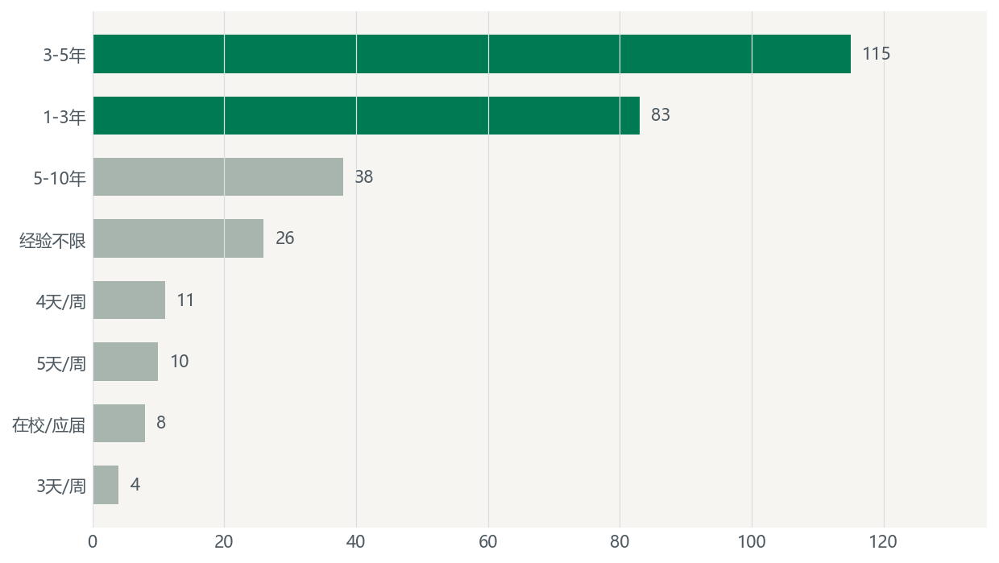
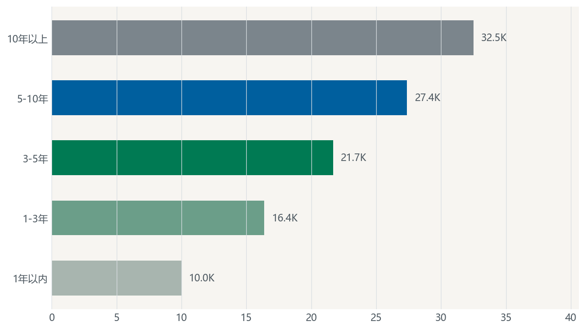
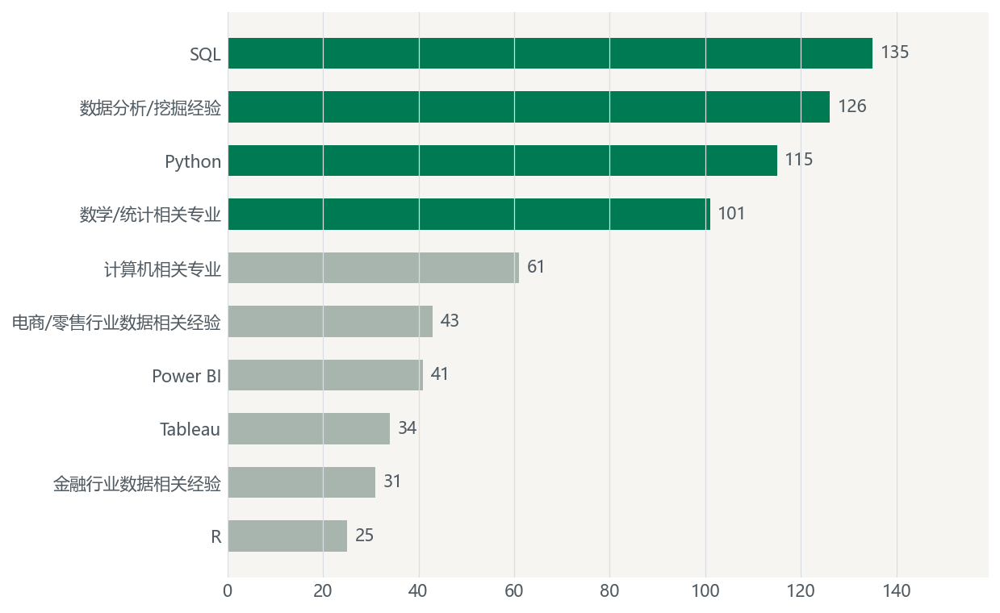
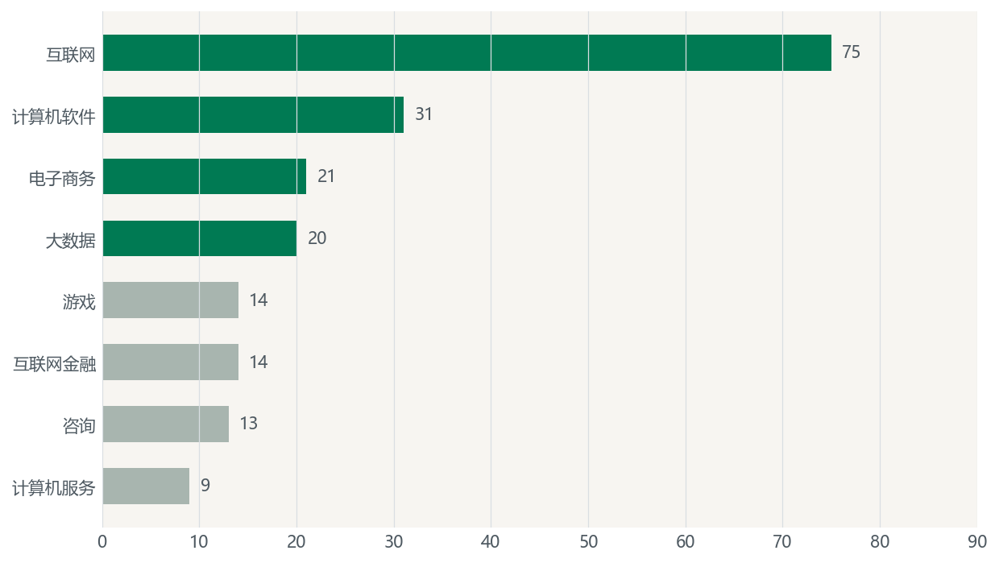

BOSS 上海数据分析师岗位经营复盘报告
会议用途：把 300 条岗位样例转成可复查的岗位层级、薪资、技能与雇主结构判断，用于下一轮采集、岗位画像和求职策略校准。
一句话结论：样本中的上海数据分析师岗位主战场在 1-5 年经验段，薪资随经验年限呈阶梯上移，SQL、Python、统计和分析挖掘构成基础门槛，互联网公司仍是最大岗位来源。
执行摘要 / 本轮状态
先读结论，再看队列和动作
- 经验结构是第一优先级。1-3 年 83 条、3-5 年 115 条，合计 198 条，占 300 条样本的 66.0%；这意味着报告主线应围绕中级岗位画像，而不是泛泛列技能。
- 薪资梯度清晰但不是实际录用薪资。可解析薪资 266 条；月薪中位估计均值为 20.5K，1-3 年、3-5 年、5-10 年分别为 16.4K、21.7K、27.4K。
- 技能要求呈基础能力簇。SQL 135、数据分析/挖掘 126、Python 115、数学/统计 101；工具能力和统计分析能力需要一起出现。
- 公司类型集中但未覆盖全部岗位族。互联网 75、计算机软件 31、电子商务 21、大数据 20，前四类合计 147 条，占 49.0%。
| 队列项 | 状态 | 本轮证据 | 当前判断 | 下一动作 |
|---|---|---|---|---|
| 岗位层级 | 关注 | 3-5 年 115 条，为最大单段 | 中级岗位是主叙事 | 按经验段拆岗位画像 |
| 薪资口径 | 正常 | 266 条可解析，88.7% | 可做区间估算 | 所有薪资结论标注为发布薪资估算 |
| 技能标签 | 正常 | SQL、分析、Python、统计均过百 | 不是单一技能驱动 | 改用能力簇表达 |
| 趋势判断 | 待补 | 缺发布日期 | 不能判断升温或降温 | 下一轮补采发布日期 |
经验结构：岗位主体落在 1-5 年
单位：岗位条数，占比按 300 条样本估算
经验段分布

薪资梯度：经验每上一个台阶，发布薪资均值同步抬升
单位：K/月，基于可解析发布薪资
不同经验段的月薪估算均值

技能标签：核心要求是“分析能力簇”，不是单个工具
单位：标签出现次数
高频技能标签

公司类型：互联网仍是最大来源，前四类接近半数
单位：岗位条数
主要公司类型分布

复盘表：本轮可落地的判断
状态、原因、动作分开记录
| 复盘项 | 状态 | 证据 | 解释 | 对下一版报告的要求 |
|---|---|---|---|---|
| 报告主线 | 正常 | 1-5 年岗位占 66.0% | 样本核心不是泛岗位画像，而是中级岗位需求 | 首屏必须先放经验结构和薪资梯度 |
| 薪资可信度 | 关注 | 266/300 条可解析 | 足够做估算，但仍有 34 条缺口 | 所有薪资图表标注“可解析发布薪资” |
| 技能解释 | 正常 | 四个核心标签均过百 | 岗位要求是工具、统计和分析经验组合 | 正文用能力簇，不做技能排行榜式结论 |
| 公司类型解释 | 关注 | 前四类占 49.0% | 行业结构有集中度，但不能代表岗位成熟度 | 后续加公司规模、融资阶段或业务线字段 |
| 趋势判断 | 待补 | 缺发布日期 | 不能判断近期需求变化 | 补采日期前，不写“升温”“降温” |
建议下一步
每项动作保留目标、依赖和检查口径
| 动作 | 目标 | 负责人角色 | 时间窗 | 依赖 | 风险 / 通过标准 |
|---|---|---|---|---|---|
| 按经验段重建岗位画像 | 形成 1-3 年、3-5 年、5-10 年三组画像 | 报告撰写 / 分析 | 下一版报告 | 岗位标题、职责文本、技能标签 | 通过标准：每组都有职责、技能、薪资和公司类型解释 |
| 补采岗位详情文本和发布日期 | 支持岗位族拆分和趋势判断 | 数据准备 | 下一轮采集 | BOSS 原始岗位详情页字段 | 风险：字段缺失时仍只能做静态结构复盘 |
| 做薪资交叉表 | 判断薪资差异来自经验、行业还是技能组合 | 分析 | 2 个工作日 | 薪资解析结果、公司类型、技能标签 | 通过标准：至少输出经验 × 公司类型、经验 × 技能两张表 |
| 建立求职侧清单 | 把高频技能转成简历和项目准备项 | 求职策略 | 下一次复盘前 | 目标经验段、目标公司类型 | 风险：若目标岗位偏管理或数据产品，需要另补能力项 |
仍需回答的问题
这些问题会改变下一轮判断
| 问题 | 为什么重要 | 需要补的证据 | 下次检查方式 |
|---|---|---|---|
| 岗位是否真的偏中级，还是搜索词导致？ | 会影响报告主线和求职建议 | 更多关键词样本，如商业分析、BI、数据产品 | 换关键词后复算经验结构 |
| 薪资上移主要由经验还是公司类型驱动？ | 会影响谈薪和目标公司选择 | 经验段 × 公司类型 × 薪资交叉表 | 看同经验段内公司类型差异 |
| SQL / Python / 统计是否共现？ | 会影响技能优先级 | 岗位级标签共现矩阵 | 输出高频技能组合和岗位族 |
| 互联网岗位内部属于增长、运营、风控还是数据产品？ | 同为互联网，岗位能力差异可能很大 | 岗位详情文本、岗位标题、业务关键词 | 按业务场景重分组 |
| 需求是否有近期变化？ | 会影响“当前市场”判断 | 岗位发布日期和重复岗位去重规则 | 按周或月复盘新增岗位 |
下次检查项
用于下一轮 operating review
口径与注释
数据范围和解释边界
1. 数据范围：本报告只覆盖 BOSS 岗位案例中的 300 条上海“数据分析师”岗位记录，不代表全量招聘市场。
2. 薪资口径：300 条中有 266 条薪资可解析；“月薪中位估计均值 20.5K”和各经验段薪资均值均来自可解析发布薪资，发布薪资不等同于实际录用薪资、税前税后口径或全年总包。
3. 经验口径：1-3 年 83 条，3-5 年 115 条，5-10 年 38 条；其余 64 条为其他经验表达或未进入本轮重点经验段。
4. 技能口径：SQL 135、数据分析/挖掘 126、Python 115、数学/统计 101 是标签出现次数；一条岗位可能对应多个标签，因此不能相加为岗位总数。
5. 公司类型口径：互联网 75、计算机软件 31、电子商务 21、大数据 20；公司类型是招聘信息中的粗分类，不能直接代表业务线、团队成熟度或数据基础设施水平。
6. 趋势限制：本轮未使用岗位发布日期，所有结论均为样本结构复盘，不判断招聘需求的时间趋势。